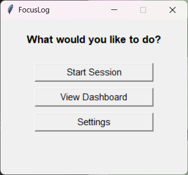
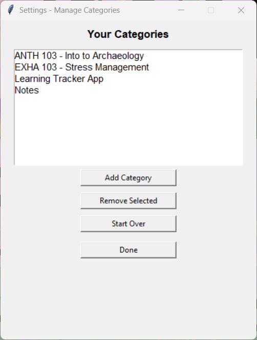
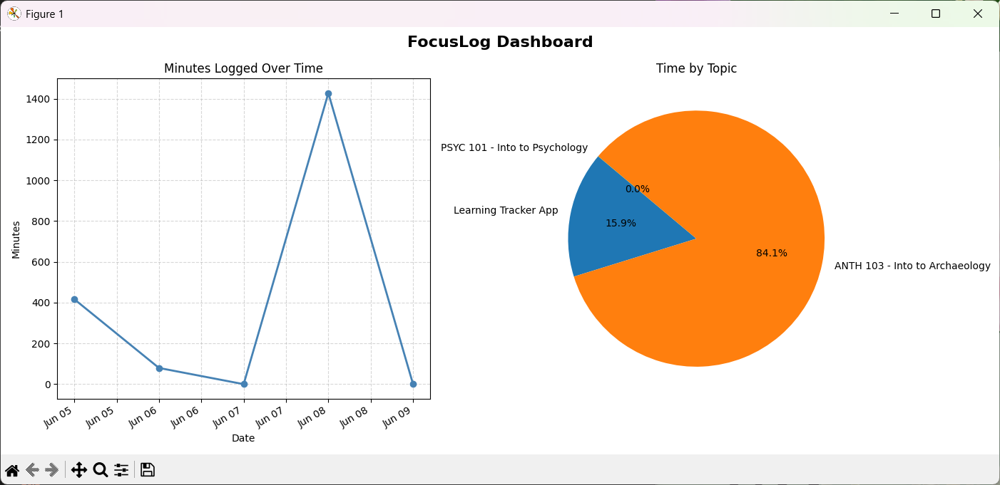

Windows desktop app
A simple app for tracking work and learning sessions. Two clicks to start, two clicks to stop. Your data stays on your machine.
Download FocusLogWindows · Free · No account needed



How it works
Choose from your saved categories or type a custom one.
FocusLog runs quietly in the background while you focus.
End the session, add optional notes, and see it in your dashboard.
What's included